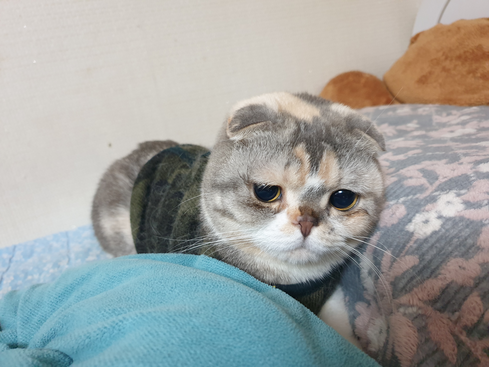

갱투
갱투 내용 다른 부위의 털에 비해 확실히 단단하고 부드럽습니다 본론으로 돌아와서, 보통 수염 하면 저처럼 쓸모없을 것이라고 생각하는데 바로 이게 균형을 감지할 수 있도록 도와준다고 합니다 특히 시각까지 보호해주기 때문에 정말 중요한 부분이었답니다 특히 민감한 신경 세포가 있다고 하니.. 바람이나 공기 진동 같은 것도 다 파악할 수 있는 곳이라 합니다 이런 걸 잘라버리게 되면 균형을 못 잡아서 떨어지거나 방향 감각을 잃는다고 합니다 특히 좁고 넓음에 차이도 구분을 못하게 된다고 합니다.